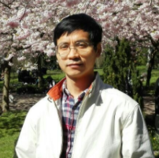
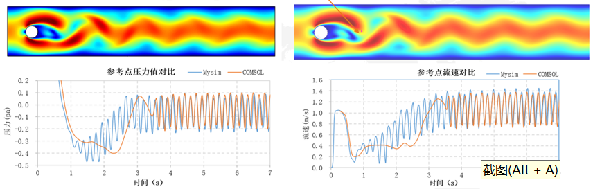

I am a simulation expert with a focus on algorithm development for CAE software since 2017. I have released multiple beta versions and prototypes. In addition, I have solely developed a compact 2D geometric library and a surface meshing library in C++, demonstrating full-stack numerical and geometric programming capabilities. Before transitioning to IT development, I was a researcher in maritime and ecosystem modeling from 1996 to 2016, including nine years at the Danish Meteorological Institute and four years at Xiamen University. I currently provide algorithm development and consultancy. I am now prototyping an innovative solution to reduce the sample size in clinical trials for vascular disease interventions. This approach uses a hybrid physics-informed machine learning (PIML) framework to map wearable-derived physiological signals to clinical outcomes. Read more
Experience
- Founder, Nanjing MySim Digital Technology (2019 ~ )
- FEA Expert, Beijing Leviathan Technology (2016 - 2018)
- Research Scientist, Danish Meteorological Institute (2007 - 2017)
- Associate Professor, Xiamen University (2004 - 2007)
Operate this sole offshore R&D unit, but open to both project and job opportunities now.
--Vascular Hemodynamics Simulator prototype HemoDyn
--multiphysics simulator MySim beta
--micro climate simulator prototype MicroClimate
--geometric lib Geo2D
--electromagnatic wave simulator EML beta
Projects
- HemoDyn - Vascular Hemodynamics Simulator prototype
- EML - High Frequency Electromagnetic Wave Simulator
- MySim - Multiphysics Simulator
HemoDyn aims to simulate blood flow and physiological dynamics for boosting bioengineering development and assessing the effects of medical intervention. The preliminary goal is to reduce the sample size in clinical trials for LEAO. Oxygen concentration in leg muscules is the selected bioinfo for measuring the severity of LEAO. ML is employed to map oxygen with functional index, e.g. walk distance. Oxygen comes from a physiological model which connects a vascular hemodynamics model. The hemodynamics model is driven by pulse data from wearable devices, e.g. Apple Watch, while assimilating other data, like readings from a toe-tip oximeter. The hemodynaimcs model is solved by the 1D ROM solver of SimVascular. The physiological model of oxgen allowig for transport, transmembrane exchange and muscular consumption is solved by multiple solvers from Elmer Multiphysics. VTK is used to animate model results. API to access pulse data from wearable devices and functionalities to faciliate ML is being developed.
FreeCAD, Gmsh and Elmer Multiphysics are integrated to enable non-developer to reproduce Ansys HFSS benchmark cases.

FreeCAD, Gmsh and Elmer Multiphysics are integrated to enable non-developer to reproduce COMSOL benchmark cases.
